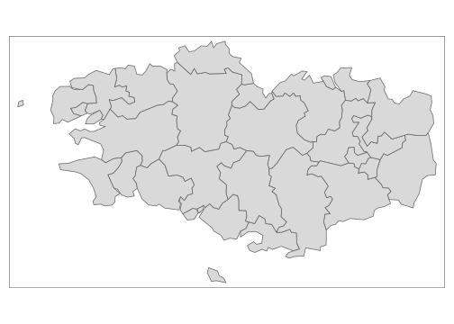
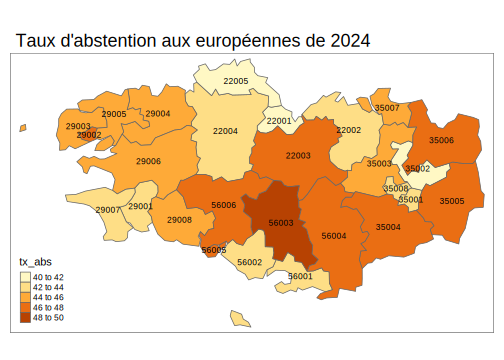

Partie 11 Cartographie avec tmap (2024)

- Mise en place : Télécharger le dossier exo8 et décompressez le sur votre ordinateur. Puis ouvrez le projet R
exo8.Rprojdans Rstudio.
11.1 Introduction
11.1.1 Cartographie dans R
Il est très facile de faire des cartes dans R. Le package cental est sf (spatial features) qui permet d’importer, exporter, transformer des fonds de cartes. Toutefois ce package sf a des fonctionalités limitées en matière de représentations finales de documents et son rôle est davantage la gestion des données spatiales que leur représentation. On utilisera donc des packages spécialisés comme :
- mapsf
- ggmap
- tmap
- mapview
- etc.
On a choisi ici d’utiliser tmap car c’est l’un des plus simples pour les débutants et sa syntaxe est très proche de celle de ggplot2
11.2 Données statistiques
11.2.1 Chargement du fichier
On charge un fichier statistique portant sur les élections européennes de 2024 par circonscriptions en France et on sélectionne quelques variables
don<-readRDS("resources/data/elect2024/elec2024_circ.RDS")
don$urb3 <- cut(don$loc_urb, breaks=c(-1,50,90,101))
levels(don$urb3) <- c("rural (<50%) ","mixte (50-90%)","urbain (>90%)")
don$tx_abs <- 100*(don$INS-don$EXP)/don$INS
don<-don[,c("ID","code_reg","nom_reg", "INS","EXP", "urb3", "dip_supbac","tx_abs")]
kable(head(don))| ID | code_reg | nom_reg | INS | EXP | urb3 | dip_supbac | tx_abs |
|---|---|---|---|---|---|---|---|
| 33004 | 75 | AQUITAINE-LIMOUSIN-POITOU-CHARENTES | 100017 | 49376 | urbain (>90%) | 34.3 | 50.63239 |
| 38001 | 84 | AUVERGNE-RHONE-ALPES | 81713 | 50493 | urbain (>90%) | 67.9 | 38.20689 |
| 59010 | 32 | NORD-PAS-DE-CALAIS-PICARDIE | 78179 | 34081 | urbain (>90%) | 33.6 | 56.40645 |
| 33007 | 75 | AQUITAINE-LIMOUSIN-POITOU-CHARENTES | 80870 | 44597 | urbain (>90%) | 55.2 | 44.85347 |
| 01001 | 84 | AUVERGNE-RHONE-ALPES | 83122 | 45120 | rural (<50%) | 33.1 | 45.71834 |
| 01002 | 84 | AUVERGNE-RHONE-ALPES | 102088 | 56962 | mixte (50-90%) | 40.0 | 44.20304 |
11.2.2 Dictionaire des variables
Nous n’utiliserons ici que quelques variables
- ID : Code de la circonscription
- code_reg : code de la région
- nom_reg : nom de la région
- INS : nombre d’inscrits
- EXP : nombre de suffrages exprimés
- urb3 : typologie des circonscriptions
- dip_supbac : % actifs diplômés > bac
- tx_abs : taux d’abstention
11.2.3 Résumé de l’ensemble du tableau
summary(don)
#> ID code_reg nom_reg INS
#> Length:535 Length:535 Length:535 Min. : 33901
#> Class :character Class :character Class :character 1st Qu.: 75148
#> Mode :character Mode :character Mode :character Median : 84248
#> Mean : 85422
#> 3rd Qu.: 96414
#> Max. :147319
#> EXP urb3 dip_supbac tx_abs
#> Min. :15577 rural (<50%) :183 Min. :21.00 Min. :37.22
#> 1st Qu.:38112 mixte (50-90%):174 1st Qu.:30.75 1st Qu.:44.77
#> Median :44568 urbain (>90%) :178 Median :35.70 Median :47.25
#> Mean :44957 Mean :39.40 Mean :47.54
#> 3rd Qu.:51238 3rd Qu.:44.55 3rd Qu.:49.94
#> Max. :82024 Max. :80.10 Max. :65.4811.3 Données cartographiques
11.3.1 Carte des circonscriptions
On importe en premier le fonds de carte des circonscriptions à l’aide de la commande st_read() du package sf. Ceci permet de convertir le fichier shapefile (externe) en fichier sf (utilisable par R).
library(sf)
map <- st_read("resources/data/elect2024/map_circ.shp")
#> Reading layer `map_circ' from data source
#> `/Users/claudegrasland1/worldregio/bivaR/resources/data/elect2024/map_circ.shp'
#> using driver `ESRI Shapefile'
#> Simple feature collection with 535 features and 6 fields
#> Geometry type: MULTIPOLYGON
#> Dimension: XY
#> Bounding box: xmin: -5.115104 ymin: 42.33349 xmax: 8.197396 ymax: 51.0894
#> Geodetic CRS: WGS 84
class(map)
#> [1] "sf" "data.frame"
head(map)
#> Simple feature collection with 6 features and 6 fields
#> Geometry type: MULTIPOLYGON
#> Dimension: XY
#> Bounding box: xmin: -0.837084 ymin: 44.67258 xmax: 5.889757 ymax: 50.7899
#> Geodetic CRS: WGS 84
#> ID code_dpt nom_dpt nom_reg num_circ code_reg
#> 1 33004 33 GIRONDE AQUITAINE-LIMOUSIN-POITOU-CHARENTES 4 75
#> 2 38001 38 ISERE AUVERGNE-RHONE-ALPES 1 84
#> 3 59010 59 NORD NORD-PAS-DE-CALAIS-PICARDIE 10 32
#> 4 33007 33 GIRONDE AQUITAINE-LIMOUSIN-POITOU-CHARENTES 7 75
#> 5 01001 01 AIN AUVERGNE-RHONE-ALPES 1 84
#> 6 01002 01 AIN AUVERGNE-RHONE-ALPES 2 84
#> geometry
#> 1 MULTIPOLYGON (((-0.474471 4...
#> 2 MULTIPOLYGON (((5.820517 45...
#> 3 MULTIPOLYGON (((3.065825 50...
#> 4 MULTIPOLYGON (((-0.729251 4...
#> 5 MULTIPOLYGON (((4.896281 46...
#> 6 MULTIPOLYGON (((5.478565 45...On remarque que ce fichier comporte une colonne spéciale appelée geometry. C’est celle qui contient le fonds de carte, que l’on peut visualiser avec la fonction plot() :

11.3.2 Autres fonds de carte
Nous chargeons également deux autres fonds de carte présentant les déparements et les régions.
map_dept <- st_read("resources/data/elect2024/map_dept.shp")
#> Reading layer `map_dept' from data source
#> `/Users/claudegrasland1/worldregio/bivaR/resources/data/elect2024/map_dept.shp'
#> using driver `ESRI Shapefile'
#> Simple feature collection with 94 features and 4 fields
#> Geometry type: MULTIPOLYGON
#> Dimension: XY
#> Bounding box: xmin: -5.115104 ymin: 42.33349 xmax: 8.197396 ymax: 51.0894
#> Geodetic CRS: WGS 84
map_reg <- st_read("resources/data/elect2024/map_reg.shp")
#> Reading layer `map_reg' from data source
#> `/Users/claudegrasland1/worldregio/bivaR/resources/data/elect2024/map_reg.shp'
#> using driver `ESRI Shapefile'
#> Simple feature collection with 12 features and 2 fields
#> Geometry type: MULTIPOLYGON
#> Dimension: XY
#> Bounding box: xmin: -5.115104 ymin: 42.33349 xmax: 8.197396 ymax: 51.0894
#> Geodetic CRS: WGS 84
par(mfrow=c(1,2), mar=c(0,0,3,0))
plot(map_dept$geometry)
title("Départements")
plot(map_reg$geometry)
title("Régions")
11.4 Jointure
Afin de représenter les variables contenues dans le tableau statsitique (don), il faut effectuer une jointure avec le fonds de carte (map) en trouvant une variable commune et en appliquant la fonction merge(). On retire les variables en double du fonds de carte

11.5 Carte de repérage
La création d’une carte avec tmap se fait à l’aide de la fonction tm_shape() suivie de la fonction tm_polygons() que l’on relie par un opérateur +comme dans ggplot.

On peut ajouter un texte à l’aide de tm_text() et un titre à l’aide de tm_layout().
tm_shape(mapdon_reg) +
tm_polygons() +
tm_text("ID") +
tm_layout(title = "Circonscriptions de Bretagne")
Toute une série d’options permettent d’améliorer la carte.
tm_shape(mapdon_reg) +
tm_polygons(col = "lightyellow") +
tm_text("ID",
size = 0.7,
col= "red") +
tm_layout(main.title = "Circonscriptions de Bretagne",
bg.color = "lightblue")
11.6 Carte d’une variable qualitative
Il suffit que la varaible qualitative soit bien de type factor ou character et tmap va automatiquement utiliser la solution adaptée. On donne juste le nom de la variable à représenter dans tm_polygons() .

On peut ensuite ajouter un habillage comme on l’a vu précédemment et modifier les paramètres.
tm_shape(mapdon_reg,) +
tm_polygons("urb3") +
tm_text("ID",
size = 0.7,
col= "black") +
tm_layout(main.title = "Typologie Urbain-Rural",
title.size = 1.2,)
11.7 Carte d’une variable quantitative de taux
Lorsqu’un phénomène correspond à un taux concernant une population répartie dans l’ensemble de l’espace, il suffit d’indiquer celle-ci dans tm_polygons() pour la visualiser.

L’habillage se fait sans difficultés. De nombreuses options permettent de modifier les classes, les couleurs, etc.
11.8 Carte d’une variable quantitative de stock
Dans le cas où la variable quantitative décrit des stocks que l’on peut additionner il faut changer de représentation et utilise des figurés proportionnels à l’aide de la fonction tm_bubbles()
tm_shape(mapdon_reg,) +
tm_polygons() +
tm_bubbles (size = "INS", col="red") +
tm_layout(main.title = "Nombre de suffrages exprimés par circonscription",
title.size = 1.2,)
11.9 Combinaison de cartes quantitatives de stock et de taux
Dans la mesure où un taux est en général le rapport de deux stocks, il est intéressant de représenter simultanément un tauxw et son dénominateur. Par exemple le taux d’abstention ert le nombre d’inscrits :
tm_shape(mapdon_reg,) +
tm_polygons() +
tm_bubbles(size="INS",col="tx_abs")+
tm_layout(main.title = "Taux d'abstention et nombre d'inscrits",
title.size = 1.2,
legend.outside = T)
11.10 Superposition de cartes
On peut facilement superposer des cartes de types différents en les ajoutant les unes après les autres. Par exemple :
tm_shape(mapdon_reg,) +
tm_polygons("urb3") +
tm_bubbles(size="INS",col="tx_abs")+
tm_layout(main.title = "Taux d'abstention selon le milieu urbain ou rural",
title.size = 1.2,
legend.outside = T)
11.11 Juxtaposition de cartes
Une façon très simple consiste à donner plusieurs variables dans la fonction tm_polygons() puis à spécifier la disposition des deux cartes avec tm_facets().
# Dispossition verticale
tm_shape(mapdon_reg) +
tm_polygons(c("tx_abs","dip_supbac")) +
tm_facets(ncol = 1)
# Dispossition horizontale
tm_shape(mapdon_reg) +
tm_polygons(c("tx_abs","dip_supbac")) +
tm_facets(ncol = 2)